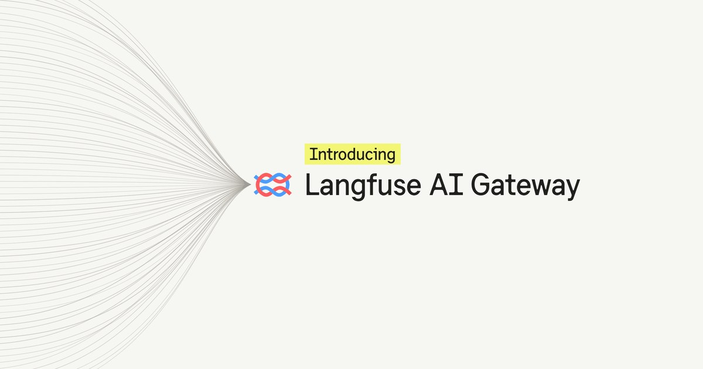
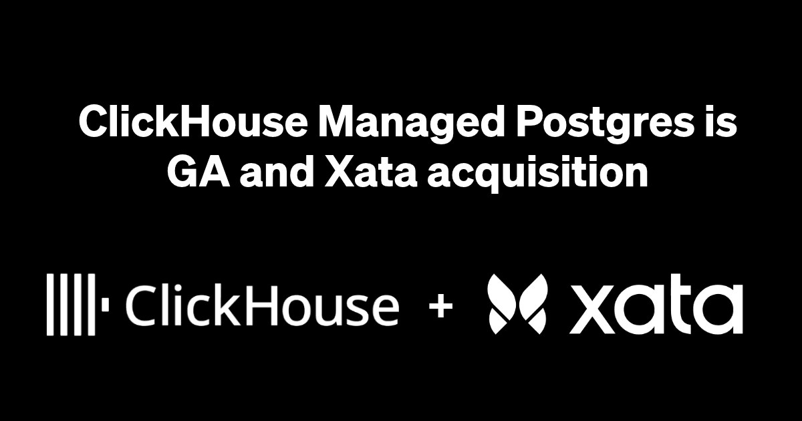

Author: Alexey Milovidov, 2026-11-24.
1. (50 min) What's new in ClickHouse 26.11.
2. (10 min) Q&A.
— 95 new features 🥧
— 364 performance optimizations 🌽
— 932 bug fixes 🧣
Three new functions for arrays:
SELECT arrayPermutations(['a', 'b', 'c']);
-- [['a','b','c'],['a','c','b'],['b','a','c'],['b','c','a'],['c','a','b'],['c','b','a']]
SELECT arrayPartialPermutations(['gold', 'silver', 'bronze'], 2);
-- [['gold','silver'],['gold','bronze'],['silver','gold'],['silver','bronze'], ...]
SELECT arrayCombinations(['🍕', '🍔', '🌮', '🍣'], 2);
-- [['🍕','🍔'],['🍕','🌮'],['🍕','🍣'],['🍔','🌮'],['🍔','🍣'],['🌮','🍣']]
— Enumerated by positions: equal elements give repeated results.
— The result size is limited by function_range_max_elements_in_block.
Developer: ArtemovMichael.
WITH [('Amsterdam', 4.90, 52.37), ('Berlin', 13.40, 52.52), ('Paris', 2.35, 48.86),
('Madrid', -3.70, 40.42), ('Rome', 12.50, 41.90), ('Vienna', 16.37, 48.21),
('Prague', 14.42, 50.09), ('Lisbon', -9.14, 38.72), ('London', -0.13, 51.51)] AS cities
SELECT arrayMap(c -> c.1, route) AS path,
round(arraySum(arrayMap((a, b) -> geoDistance(a.2, a.3, b.2, b.3),
route, arrayRotateLeft(route, 1))) / 1000) AS km
FROM (SELECT arrayJoin(arrayPermutations(cities)) AS route)
WHERE route[1].1 = 'Amsterdam'
ORDER BY km LIMIT 1;
path: ['Amsterdam','Berlin','Prague','Vienna','Rome','Madrid','Lisbon','Paris','London']
km: 5904
9 cities, 362 880 routes: 0.2 sec.
JSONRemove (JSON_REMOVE) — remove members by JSONPath:
SELECT JSONRemove('{"user":"alice","password":"qwerty","tags":["a","b","c"]}',
'$.password', '$.tags[0]');
-- {"user":"alice","tags":["b","c"]}
JSONExtractLeafValues — all the scalar values, for a text index:
SELECT JSONExtractLeafValues(
'{"level":"error","msg":"disk full","ctx":{"host":"db-7","codes":[28,5]}}');
-- ['error','disk full','db-7','28','5']
CREATE TABLE logs (ts DateTime, body String,
INDEX idx JSONExtractLeafValues(body) TYPE text(tokenizer = 'splitByNonAlpha'))
Developers: Minh Vu, rohit.
The length of a line: on a plane, on a sphere, on the WGS84 spheroid.
WITH [(4.9041, 52.3676), (2.3522, 48.8566), (-0.1276, 51.5072)]::LineString AS route
SELECT lengthSpheroid(route) / 1000; -- 774 km: Amsterdam → Paris → London
— lengthCartesian (ST_Length), lengthSpherical, lengthSpheroid;
— exteriorRing, interiorRingN, pointN
(ST_ExteriorRing, ST_InteriorRingN, ST_PointN);
— polygonMinimumRotatedRectangleCartesian —
the smallest rotated rectangle that contains a geometry.
Also: CAST from Point, LineString, Polygon to their Multi- types.
Developer: Pulkit Chauhan.
The new logical types of the Parquet format, for reading and writing:
INSERT INTO FUNCTION file('places.parquet')
SELECT name, loc FROM places -- loc Point
SETTINGS output_format_parquet_geometry_logical_type = 1;
SELECT count() FROM file('places.parquet')
WHERE pointInPolygon(loc, [(10., 10.), (11., 10.), (11., 11.), (10., 11.)]);
-- 76 of 77 row groups are skipped by the bounding boxes
— read as ClickHouse geo types: Point, Polygon, …, Geometry;
— GeospatialStatistics (bounding boxes) prune row groups;
— GeoParquet 1.1 native (GeoArrow) encodings are also readable.
Developer: Alexey Milovidov.
$ clickhouse-client --vim
— starts in insert mode; Esc switches to normal mode;
— motions: h j k l w b e 0 $ f t % gg G …
— operators d, c with counts and text objects: d2w, ciw, dd, …
— Enter inserts a new line; Ctrl+J runs the query;
— v opens the query in your $EDITOR.
Demo.
Developer: Isak Ellmer.
FirstApplicable picks the first codec that fits the type of a column:
CREATE TABLE t (id UInt64, x Float32, s String)
ENGINE = MergeTree ORDER BY id
SETTINGS default_compression_codec = 'FirstApplicable(PCO, ZSTD(3))';
-- id, x: PCO; s: ZSTD(3); the sizes of strings: PCO
Per column: CODEC(FirstApplicable(PCO, ZSTD(3))).
An alternative can be a pipeline: Multiple(T64, ZSTD(3)).
Example: 1M sequential ids: LZ4: 3.82 MiB, PCO: 7.69 KiB.
Developer: Alexey Milovidov.
Limit any of the 1800+ counters of system.events, by name:
CREATE QUOTA network_egress FOR INTERVAL 1 day
MAX S3GetObject = 100000, NetworkSendBytes = '100G' TO user1;
CREATE QUOTA scan_budget FOR INTERVAL 1 hour
MAX SelectedMarks = 2000, OSCPUVirtualTimeMicroseconds = '10M' TO analyst;
-- Quota for user `analyst` for 3600s has been exceeded:
-- SelectedMarks = 2445/2000. (QUOTA_EXCEEDED)
— in SQL and in the users.yaml configuration;
— usage: profile_events, max_profile_events in system.quota_usage.
Developer: Alexey Milovidov.
Typed paths are fast, but each one is a separate set of files.
With hundreds of them, parts have too many files:
CREATE TABLE t (data JSON(
SHARED user_id UInt32,
SHARED status String,
...))
— shared paths are stored together, in a constant number of files;
— a read of one path still decodes only that path.
Example, 200 typed paths: 431 files per part → 37 files.
Developer: Pavel Kruglov.
A Prometheus server can scrape series from a TimeSeries table 🧪
through the standard /federate endpoint:
$ curl 'http://clickhouse:9363/federate?match[]=node_load1'
# TYPE node_load1 untyped
node_load1{instance="db-1:9100",job="node"} 0.316 1795485442726
node_load1{instance="db-2:9100",job="node"} 0.416 1795485442726
node_load1{instance="db-3:9100",job="node"} 0.516 1795485442726
$ cat prometheus.yml
scrape_configs:
- job_name: clickhouse
honor_labels: true
metrics_path: /federate
params: { 'match[]': ['{job="node"}'] }
static_configs: [{ targets: ['clickhouse:9363'] }]
Developer: Valery Petrov.
A clause in place of ORDER BY: rows in a uniformly random order.
SET allow_experimental_shuffle_query = 1;
SELECT * FROM hits SHUFFLE;
SELECT * FROM hits SHUFFLE LIMIT 10; -- a uniform random sample
— O(n) instead of O(n log n); parallel; works in distributed queries;
— with LIMIT: reservoir sampling in every thread, no sorting at all;
— ORDER BY rand() is now executed the same way.
Example: ORDER BY rand() of 300M numbers:
26.10: 18.8 sec. 26.11: 0.94 sec.
Developers: kaguya sama, koz9va.
SELECT name, signature FROM system.functions;
substring (StringOrFixedString | Enum, NativeNumber, [NativeNumber]) -> String
if (MaybeNullable(UInt8) | Nothing, T1, T2) -> leastSupertypeOrVariant(T1, T2)
arrayMap (Function((Any, ...), R : Any), Array, ...) -> Array(R)
toStartOfInterval (DateOrDateTime, const Interval, [const DateOrDateTime], [const String])
-> DateOrDateTime
geoDistance (A : Number, B : Number, C : Number, D : Number)
-> selectIf(anyFloat64(A, B, C, D), Float64, Float32)
— a small language of type matchers and type functions;
— checks the arguments and infers the return type
instead of hand-written code in every function;
— 1380 of 1525 functions already have a signature.
Proposed in 2018 (#3775) — implemented in 2026.
Developer: Alexey Milovidov.
The adaptive aggregator appeared in 26.8: frequent keys stay
in small per-thread hash tables, rare keys are routed to partitions.
In 26.11 it is much faster and uses less memory:
SELECT WatchID, ClientIP, count(), sum(IsRefresh), avg(ResolutionWidth)
FROM hits GROUP BY WatchID, ClientIP ORDER BY count() DESC LIMIT 10;
26.10: 0.47 sec, 4.9 GB. 26.11: 0.24 sec, 1.9 GB.
When it has to spill to disk (a limit of 500 MB):
26.10: 3.69 sec. 26.11: 0.73 sec.
Developer: Nihal Z. Miaji.
— Numbers + one String in the key: a new hash table
that keeps short strings inside the key.
SELECT UserID, minute(EventTime) AS m, SearchPhrase, count() FROM hits
GROUP BY UserID, m, SearchPhrase ORDER BY count() DESC LIMIT 10;
26.10: 0.42 sec, 4.7 GB. 26.11: 0.19 sec, 1.7 GB.
— ORDER BY count() LIMIT n: only the groups that can reach
the top are merged — also for sum, min, max, uniqExact.
— count(DISTINCT) with GROUP BY: the states are merged in parallel.
— Nullable keys, a single LowCardinality key: up to 2.5 times faster.
Developers: Nihal Z. Miaji, Alexey Milovidov, Groene AI.
The final DISTINCT is now evaluated on several threads:
SELECT DISTINCT UserID, SearchPhrase FROM hits;
26.10: 7.30 sec. 26.11: 0.51 sec.
count(DISTINCT) and uniqExact use radix partitioning:
SELECT count(DISTINCT UserID) FROM hits;
26.10: 0.089 sec, 1051 MB. 26.11: 0.028 sec, 264 MB.
Developers: Alexey Milovidov, Raúl Marín.
The columns cache keeps deserialized columns in memory.
In 26.10 it worked for MergeTree. Now also for Parquet:
— local files, S3, Azure; Iceberg, Delta Lake, Paimon tables;
— cached columns are shared without copying;
— the memory belongs to the server, not to the query that filled it.
SET use_columns_cache = 1;
Example: ClickBench, hot runs of 43 queries, c6a.metal:
Parquet: 4.46 → 3.07 sec. Parquet on S3: 8.86 → 5.27 sec.
For comparison, MergeTree: 2.74 → 2.29 sec.
Developers: Alexey Milovidov, Raúl Marín.
PREWHERE: dictionary-encoded columns are filtered once
per dictionary value; columns are filtered in place.
SELECT count() FROM hits_parquet WHERE URL LIKE '%google%';
26.10: 0.84 sec. 26.11: 0.21 sec.
Top-K: also for String keys; one threshold for all threads.
SELECT Title FROM hits_parquet ORDER BY Title DESC LIMIT 10;
26.10: 0.32 sec. 26.11: 0.12 sec. 207 of 226 row groups skipped.
Query condition cache: for s3, url, file, Iceberg, Delta Lake.
Developers: Groene AI, Alexey Milovidov, Murphy, Konstantin Vedernikov.
The Apache ORC C++ library is replaced with our own implementation,
as it was done for Parquet and Arrow before.
Example: 20M rows of ClickBench hits, 105 columns, 2 GB:
— a full scan: 23.2 sec → 11.9 sec;
— four numeric columns: 0.68 sec → 0.33 sec;
— three String columns: 3.81 sec → 2.87 sec.
Security: the library had vulnerabilities with malformed files.
The new reader is fuzzed and hardened —
and backported to 26.3, 26.8, 26.9, 26.10.
Developers: Alexey Milovidov, Raúl Marín.
DPsub: exhaustive dynamic programming over all join trees,
now by default. A conflict detector lets it also reorder
LEFT, RIGHT, FULL, SEMI and ANTI joins — no more barriers.
SELECT sum(big.v + mid.v) FROM big
INNER JOIN mid ON big.k = mid.k
LEFT SEMI JOIN tiny ON big.k = tiny.k;
before: (big ⋈ mid) ⋉ tiny 504 million intermediate rows
26.11: mid ⋈ (big ⋉ tiny) 1 million
Example: greedy: 0.26 sec. DPsub: 0.008 sec.
— Up to 10 tables; larger queries fall back to the greedy algorithm.
Developer: Fisnik Kastrati.
— Merge join by cost: for tables sorted by the join key,
the optimizer picks a merge join when it is cheaper.
SELECT u.country, sum(o.amount) FROM orders AS o
JOIN users AS u ON o.user_id = u.user_id GROUP BY u.country;
hash join: 0.44 sec, 2.6 GB. 26.11: 0.52 sec, 136 MB.
— hash and parallel_hash are now one algorithm:
the layout is chosen from the estimated size of the right table.
— Short strings are kept in the row store: 1.4–2.4 times faster.
— String keys are packed into 16 bytes.
— Lazy materialization for JOIN … LIMIT.
Developers: Fisnik Kastrati, Harikrishnan Prabakaran, Hechem Selmi, Nikolai Kochetov.
— Rows are processed in batches over sliding blocks: 1.2–1.3x faster.
— When the window follows the order of the table,
it is computed in parallel, without sorting:
SELECT sum(ResolutionWidth) OVER (PARTITION BY CounterID ORDER BY EventDate, UserID)
FROM hits; -- ORDER BY (CounterID, EventDate, UserID, ...)
26.10: 1.55 sec, 1.8 GB. 26.11: 0.41 sec, 90 MB.
— row_number() streams rows instead of buffering a partition.
— A window function used several times is computed once.
Developers: Mikhail Artemenko, Nikita Fomichev, Ilya Yatsishin, Yakov Olkhovskiy.
plain_rewritable: MergeTree on object storage with one writer
and any number of read-only servers — without a metadata service.
A read-only disk had to list the storage and read a small object
for every directory. Now the writer publishes a compact snapshot:
— readers load one object at startup and refresh it by ETag;
— enabled by default: metadata_snapshot_enabled.
Example: a read-only server attaches a table of 1000 parts:
before: 1012 LIST + 1001 GET requests. 26.11: 1 HEAD + 1 GET.
Developer: Alexey Milovidov.
— ORDER BY String LIMIT n in MergeTree: top-K filtering.
ClickBench Q25: 0.068 sec → 0.005 sec.
— sum, avg, count(col) without filters: from column statistics.
— Sets for IN (subquery) spill to disk instead of running out of memory.
— Lazy materialization and the query condition cache for Memory tables.
— ORDER BY … COLLATE: up to 3 times faster.
— Text formats: output is 5–40% faster.
— ARM: faster memcpy, memchr, substring search, min/max with SVE.
— Keeper: batched Raft log entries, up to +40% on writes.
— The server starts faster: quick_startup, 5.5 → 2.3 sec on a cold disk.
Vortex is a new open columnar file format
with lightweight cascading encodings. ClickHouse can read and write it:
SELECT count() FROM file('hits.vortex') WHERE URL LIKE '%google%';
INSERT INTO FUNCTION s3('s3://bucket/hits.vortex')
SELECT * FROM hits;
— only the queried columns are read; filters are pushed down;
— read in parallel, on ClickHouse's own thread pools;
— count() and schema inference from the file metadata;
— anywhere a file format works: file, s3, url, …
Developers: Alexey Milovidov, Maksim Dergousov.
Run a SELECT over the data being inserted, and get its result back:
CREATE TABLE orders (id UUID DEFAULT generateUUIDv7(),
created DateTime64(3) DEFAULT now64(), customer String, amount Decimal(10, 2)) ...
INSERT INTO orders (customer, amount)
RETURNING (SELECT id, created, customer)
VALUES ('alice', 100), ('bob', 250.50);
01a20b50-55e7-7cfc-a746-c7cbaf5d8d84 2026-11-24 02:09:03.967 alice
01a20b50-55e7-7cfc-a746-c7cca34cd1be 2026-11-24 02:09:03.967 bob
INSERT INTO orders (customer, amount)
RETURNING (SELECT count(), sum(amount) FROM orders)
SELECT ...
— values generated on insertion: DEFAULT, MATERIALIZED;
— the result is streamed while the data is being inserted.
Developers: Tyler Hannan, Alexey Milovidov.
A table is a file. GET downloads it, and now PUT uploads into it:
$ curl -T data.csv 'http://localhost:8123/default/uploads.CSV'
$ curl 'http://localhost:8123/default/uploads.JSONEachRow'
{"id":1,"name":"alice","score":9.5}
{"id":2,"name":"bob","score":7.25}
— the path is /database/table.Format;
— any input format: CSV, Parquet, JSONEachRow, …
— the table must exist; the usual authentication and grants apply.
Demo.
Developers: Minh Vu, Lazizbek Ergashev.
At startup, the server confines itself to a private view of the filesystem,
like a container — but without a container:
$ cat config.d/isolation.yaml
filesystem_isolation: enforce # disabled | best_effort | enforce
$ sudo ls /proc/$(pidof clickhouse)/root/
dev etc home proc run sys tmp usr var
— a new mount namespace: an empty read-only root, plus only the paths
from the configuration: data, logs, certificates, a few system files;
— no shell, no other programs; writable directories are noexec;
— with seccomp (26.10): a remote code execution has nothing to run.
Developer: Alexey Milovidov.
ASLR randomizes where the code and the data are in memory.
To defeat it, an attacker needs just one leaked pointer.
ClickHouse 26.11 does not show runtime addresses:
— stack traces and crash reports: offsets inside the binary;
— system tables: trace_log, crash_log, stack_trace,
processors_profile_log, jemalloc heap profiles;
— logs of Kafka, HDFS, NATS, Keeper, HTTP, pipeline dumps;
— addressToSymbol, addressToLine accept only offsets.
Profilers, addr2line, flame graphs keep working.
Developer: Raúl Marín.
— The official binary is static: no dynamic loader to hijack;
it refuses to start with ld.so.preload or audit libraries.
— ARM: return addresses are signed (PAC).
— Secrets are excluded from core dumps.
— The allocator aborts on a double free or a wrong size.
— Outbound TLS verifies the host name by default.
— Passwords and TOTP codes are compared in constant time.
— Native readers instead of libraries: ORC, Parquet without Arrow.
— HANDLER ADMIN, AI FUNCTIONS, workloads: separate privileges,
no longer granted by CREATE, ALTER, DROP.
system.connections: active and idle client connections.
SELECT protocol, client_address, user, status, client_name, connected_time
FROM system.connections;
┌─protocol─┬─client_address───┬─user────┬─status─┬─client_name───────┬──────connected_time─┐
│ TCP │ ::ffff:127.0.0.1 │ analyst │ active │ ClickHouse client │ 2026-11-24 02:09:45 │
│ TCP │ ::ffff:127.0.0.1 │ analyst │ idle │ ClickHouse client │ 2026-11-24 02:09:45 │
│ HTTP │ ::ffff:127.0.0.1 │ analyst │ active │ grafana/11.3 │ 2026-11-24 02:09:45 │
│ TCP │ ::ffff:127.0.0.1 │ default │ active │ ClickHouse client │ 2026-11-24 02:09:46 │
└──────────┴──────────────────┴─────────┴────────┴───────────────────┴─────────────────────┘
— native TCP and HTTP, including idle keep-alive connections;
— the real client address behind a proxy;
— enable with collect_connection_metrics; privilege SHOW CONNECTIONS.
Developer: Kaviraj Kanagaraj.
Iceberg v3 has a variant type for semi-structured data.
26.10 could read it. 26.11 can also write it:
SET allow_insert_into_iceberg = 1;
CREATE TABLE events (id Int64,
value Variant(Int64, String, Array(Int64)), payload Dynamic)
ENGINE = IcebergS3(...) SETTINGS iceberg_format_version = 3;
INSERT INTO events VALUES
(1, 42, '{"user": "alice", "geo": {"city": "Amsterdam"}}'::JSON),
(2, 'hello', [1.5, 2.5]);
— Variant and Dynamic columns become variant in the Iceberg schema;
— stored in the Parquet VARIANT binary encoding; also read from Avro.
Developer: Konstantin Vedernikov.
An experiment: adsb.exposed, 337 billion rows, written to Iceberg
by ClickHouse. Queries re-downloaded the table metadata every time:
— a HEAD request for every file: 1678 per query → 2;
— listing the metadata directory: 34 LIST requests → 0;
— every replica listed it again: 3370 LIST requests → 6;
— manifests are read ahead, 64 at a time, and parsed 3 times faster;
— parallel replicas for data lake tables, not only table functions.
Example, a map tile over 3.3 billion rows:
26.10: 10 sec. 26.11: 1.0–1.9 sec. MergeTree: 0.7–1.2 sec.
Developers: Groene AI, Alexey Milovidov, Konstantin Vedernikov.
A new kind of entries in ClickBench: Iceberg.
— every system writes the dataset into an Iceberg table itself,
through a REST catalog, with the default settings;
— then runs the queries over the table it has written;
— no tuning, no compaction, no sorting after the load.
It shows how good a system is as a writer and as a reader.
ClickHouse, DuckDB, StarRocks, Doris, Trino, Presto, Spark,
DataFusion, Databend, Opteryx.
Example, c8g.metal-48xl: ClickHouse loads in 64 sec, hot run 4.95 sec;
DuckDB: 69 and 10.8 sec; StarRocks: 183 and 9.1 sec.
github.com/ClickHouse/loom
Open source, built on ClickHouse.
— shared memory and a code index
in the same database;
— facts are versioned and checked
against the code as it changes;
— MCP, HTTP, SDKs,
plugins for Claude Code and Codex.
Built for GroeneAI. On questions about the ClickHouse code:
answer quality 0.78 → 0.84, cost per question $0.21 → $0.17.
— a billion Bluesky events,
five analytical queries;
— 5 systems in January 2025,
27 today;
— ClickHouse still leads.
Example, an aggregation over a billion documents, cold run:
MongoDB: 32 min 26 sec. ClickHouse: 661 ms.
178 changes in the JSON data type since the first JSONBench.
Now also a part of the versions benchmark.
Friday, November 13, 2026: an FAA outage grounds air traffic over the US.
The whole day as an animation, from adsb.exposed:
— 380 billion rows of ADS-B data in ClickHouse;
— 288 frames, one per five minutes;
— rendered by a SQL query with FORMAT PNG:
the map, the clock, the timeline, even the font are rows of the result;
— all frames are written in 31 seconds.
Aircraft in the air per hour: 14,957 at 14:00 ET → 2,131 at 20:00 ET.
Launched on November 9, public beta.
Fully managed observability
on ClickHouse Cloud,
powered by the open-source ClickStack.
— for SREs and their agents;
— $0.20 per GB of logs and traces;
— $0.10 per million metric data points.
Launched on November 9, private preview.
An agentic SIEM,
built on RunReveal.
— runs on your own ClickHouse Cloud service;
— 100+ integrations for log sources;
— free during the preview.

Launched on November 9, public beta.
«One open source entry point
for all AI usage in your company».
— MIT license;
— a 22 MB Docker image;
— Langfuse stores its traces in ClickHouse.

November 9: generally available on AWS.
— Postgres on local NVMe:
2–10x faster on OLTP workloads;
— natively connected to ClickHouse;
— hundreds of production customers.
Xata joins ClickHouse: instant branches
and clones, automatic idling, scale to zero — Postgres for agents.
The happiest observability users
build their own UI.
Observability Apps, private preview:
— describe an app in a prompt;
— an agent builds an interactive app
over your live data, with SQL;
— it runs in a sandbox, with read-only queries
under the permissions of the viewer.
— 🇦🇪 Dubai: Langfuse Workshop, Nov 25 · 🇰🇷 Seoul, Nov 25
— 🇨🇾 Limassol: Scaling Data Systems with ClickHouse, Nov 26
— 🇨🇦 Montréal, Nov 26 · 🇮🇳 Bengaluru, Nov 26 · 🇸🇬 Singapore, Nov 26
— 🇺🇸 Las Vegas: House Party at AWS re:Invent, Dec 1
— 🇩🇪 Berlin: Langfuse Hack, Dec 1 · 🇩🇪 Munich: AI Builders, Dec 3
— 🇫🇷 Paris: Hackathon by Mistral and ClickHouse, Dec 5
— 🇦🇺 Melbourne, Dec 8 · 🇦🇺 Sydney, Dec 9 · 🇮🇳 Bengaluru, Dec 10
— 🇺🇸 Dallas, Dec 9 · 🇺🇸 New York, Dec 10: Holiday House
— 🇨🇴 Bogotá: ClickStack Training and Meetup, Dec 15
— 🇦🇺 Melbourne: Data Night, Dec 15
— 🇬🇧 London: kickoff() at Craven Cottage, Dec 17
— 🇺🇸 Salt Lake City: Holiday House, Dec 17
— Meet GroeneAI: our autonomous contributor to ClickHouse
— Introducing Loom: agent memory that keeps up with your code
— The observability UI as we know it is dead
— The Agentic Analytics Benchmark: round two, and Jev
— The new cost-based JOIN optimizer
— JSONBench is back, and ClickHouse still leads
— The day the sky emptied: the FAA outage in FORMAT PNG
— Forecasting with time series foundation models
— Node reliability across three clouds